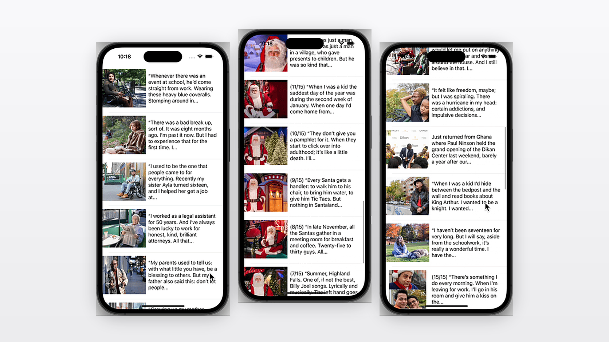
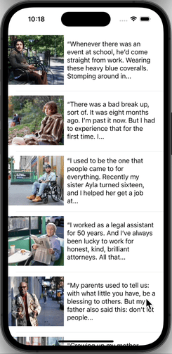

Tumblr Photo Feed
A native iOS app that pulls Humans of New York photo posts straight from the Tumblr API and lets you tap any one of them through to a full-screen story — Swift, UIKit, and a storyboard segue that carries the selected post with it.
A Feed You Can Tap Into
A scrolling list is only half an app. This one fetches photo posts from the Humans of New York Tumblr blog over the public API, decodes them into Swift models, and renders each as a custom table view cell with its photo and story summary. Tapping a cell segues to a detail screen that receives that post — the full-size photo and the complete text — which is where the interesting work lives: giving a destination view controller the data it needs before it ever appears on screen.


Running in the simulator — photos load asynchronously as the feed scrolls.
Project Overview
Navigation wired to the detail screen · the detail view UI built out · the selected post passed through to the detail view controller · personal finishing touches on top.
Swift and UIKit only — no SwiftUI, no networking framework. One URLSession data task, one JSONDecoder, and a storyboard segue.
The feed is built on a plain UITableView with a custom PostCell. A background URLSession task hits Tumblr’s public photo-posts endpoint, JSONDecoder maps the response into a small tree of Decodable structs, and the reload is hopped back onto the main queue before the table ever touches it.
Photographs are loaded through Nuke rather than fetched inline, so a cell can be dequeued and reused without waiting on the network. The same loader fills the detail screen’s image view with the original-size version of whichever photo was tapped.
The Challenge
A detail screen has no idea which row the user tapped. The segue fires before the destination view controller has loaded its views, so the data has to be handed over in that narrow window — and handed over as a real model object, not scraped back out of the cell’s labels. Get it wrong and the detail screen either shows the wrong story or arrives empty.
My Approach
Resolve the tapped row inside prepare(for:sender:), index into the same posts array the table is driven by, and assign the Post to a property on the destination. The detail view controller owns an optional post and unwraps it safely in viewDidLoad, logging rather than crashing if the segue was ever misconfigured — so a wiring mistake surfaces as a message, not a blank screen.
Technology Stack
Key Features
Everything between a public JSON endpoint and a story you can read full-screen — the fetch, the models, the reusable cell, the segue that carries the data, and the small touches that make it feel like an app.
Live Feed from the Tumblr API
A URLSession data task requests photo posts from the Humans of New York blog through Tumblr’s v2 API. The completion handler guards each failure mode separately — a transport error, a status code outside 200–299, a nil body, a decoding failure — so a blank feed always comes with a reason attached rather than silently doing nothing.
Codable Models Mirroring the Response
The JSON is decoded into a small tree of Decodable structs — Blog wrapping a Response wrapping an array of Post, each carrying its photos. CodingKeys renames the API’s original_size to a Swift-idiomatic originalSize, keeping the wire format’s conventions out of the rest of the codebase.
Custom Cell, Reused Down the Feed
The view controller acts as the table’s data source and dequeues a registered PostCell for every row. Each cell owns a single configure(with:) method that takes a post and fills in its summary text and photo — one place to change how a row looks, no configuration logic leaking into the view controller.
Asynchronous Image Loading with Nuke
Photos are loaded into cell and detail image views through NukeExtensions.loadImage(with:into:), which handles fetching and caching off the main thread. Scrolling stays smooth because no cell ever blocks waiting on a download, and revisiting a row doesn’t re-fetch an image already in the cache.
Segue Navigation with a Typed Hand-Off
Tapping a row triggers the showDetail segue. prepare(for:sender:) matches the identifier, reads the selected index path, casts the destination to DetailViewController, and assigns the corresponding Post — the whole model object, so the detail screen can show fields the cell never displayed.
A Detail Screen Built for Reading
The story is presented in a UITextView configured deliberately: scrollable for long posts, non-editable so tapping never raises the keyboard, still selectable so text can be copied, with the container inset and line-fragment padding zeroed out so the copy aligns flush with the photo above it instead of floating in default padding.
Main-Thread Discipline
Decoding happens on the session’s background queue; the model assignment and reloadData() are dispatched back to the main queue, captured weakly so a dismissed view controller isn’t kept alive by an in-flight request. UIKit only ever hears from the main thread.
Finishing Touches
A welcome alert greets the reader on the detail screen, and a String extension strips HTML out of Tumblr’s caption markup by rendering it through NSAttributedString — so tags from the API never leak into the UI as literal text.